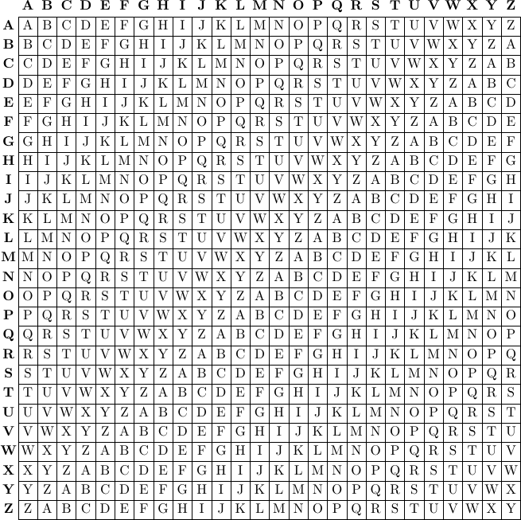
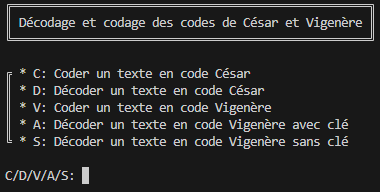
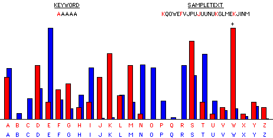
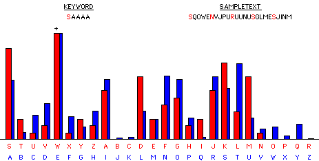
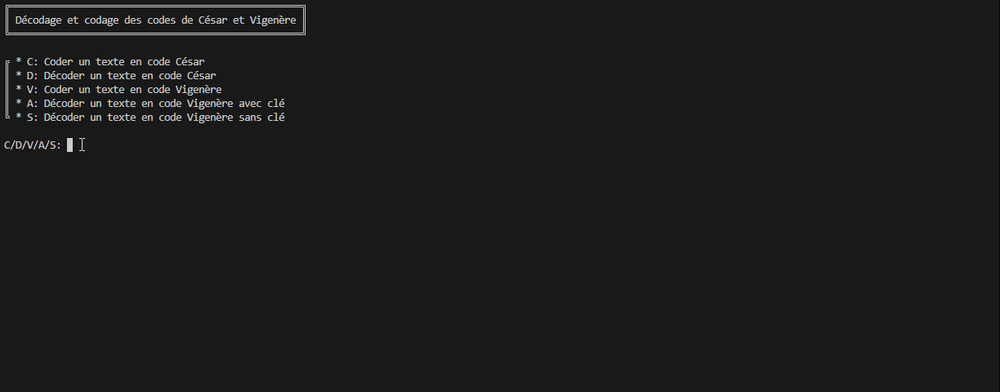

Home
About Me
Home
About Me
Home
About Me
Home
About Me
Vous connaissez le code César ? Quand on décale chaque lettre d'un certain nombre genre A -> D, B -> E, etc ? Et maintenant je vous présente une variante sophistiquée, le code Vigenère. En associant la lettre à coder à une lettre d'une clé prédéfinie, on peut chiffrer un texte indéchiffrable sans la clé en question ! ('fin en théorie)
Mon programme, fait en Python dans un cadre scolaire, permet de coder et décoder en code César, ainsi qu'en code Vigenère, même sans la clé !

Avec ce tableau, on peut prendre la colonne de la lettre à coder, la ligne de la lettre de la clé, et on obtient la lettre chiffrée. Pratique, car pour bruteforce ça ça prend des centaines d'années ('fin jsp mais beaucoup quoi ^^').
En lançant le projet, une chouette interface apparaît, et on peut choisir le type d'action en écrivant la lettre correspondante. Le "Décoder du code César" se base sur la langue française. En gros, il teste les 26 combinaisons possibles, et il regarde si l'un des essais décode un texte français.
Par contre, pour les raisons techniques, j'ai supprimé les espaces, les majuscules, les lettres accentuées et les caractères spéciaux. Ducoup au premier coup d'oeil on peut trouver que ça rend bizarre, mais pour les textes décodés, on remarquera bien que c'est un texte français. Genre "cacestuntextefrancaisvousleremarquez", mais pas ça: "sdfhyuyfutydrstamlxandzocibr".

Je viens de voir, faites pas gaffe à la qualité de l'image -_-
En vrai le reste du programme c'est ez. Le boss final du projet c'est de décoder un texte supposé indéchiffrable sans la clé, sans la clé. Et là c'est pas une partie de plaisir. Attention âmes sensibles s'abstenir, on va parler d'analyse de fréquence, de diviseurs communs, de probabilités.
Il faut savoir qu'on a besoin d'un texte assez long, et d'une clé à trouver petite, sinon c'est mathématiquement impossible.
D'abord il faut trouver des répétitions dans un texte, et trouver la longueur entre ces répétitions. Comme dans un long texte, avec de la chance des suites de lettres communes (d'où le besoin d'un long texte) ont été codés avec les mêmes lettres de la clé (d'où le besoin d'une clé courte). Avec ça on trouve la longueur de la clé.
Quand on sait la longueur de la clé, on peut découper le texte en plein de morceaux de la longueur qu'on vient de découvrir. On prend pour commencer toutes les 1ères lettres de chaque partie. On regarde leur répartition, et on les mets dans un tableau. Comme toutes les lettres sont des lettres codées avec la même lettre de la clé, alors leur répartition sur un graphique (en rouge) peut être vu comme un décalage de la répartition de base (en bleu).

Puis on a plus qu'à décaler pour remettre comme la répartition normale pour trouver la 1ère lettre de la clé. Magique !

On répète le même processus pour les autres lettres de la clé, et le tour est joué ! GG !
Ce gif est à vitesse réelle. Le texte est un texte généré aléatoirement sur un site web fait pour, et codé avec la clé "tonmou". On remarque qu'en qqs secondes, il retrouve le texte original ainsi que la clé. Vraiment, y a aucun trucage, j'ai passé beaucoup de temps dessus.
À partir du moment où je retourne à la ligne, le programme commence à déchiffrer. Certes, le programme supprime les espaces et les majuscules, mais regardez bien, et vous remarquerez que le 2ème texte est bien un texte français.
